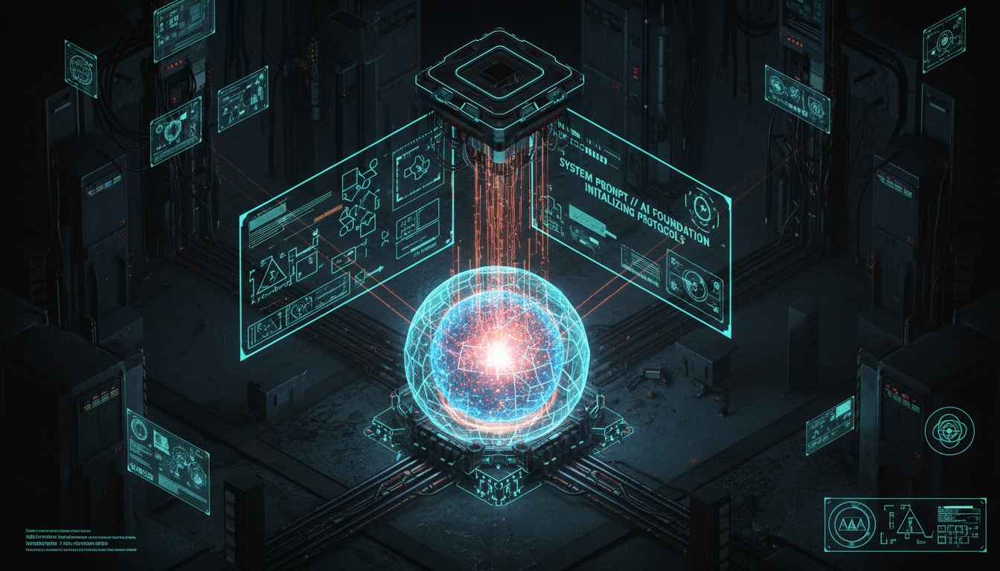
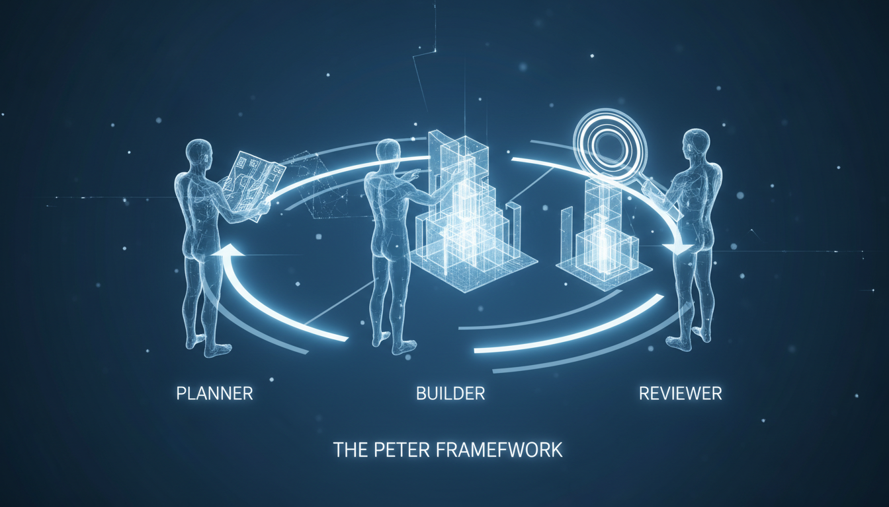

Engineering Custom Agents for Domain-Specific Alpha
Every engineer today finds themselves on a singular trajectory in the era of large language models: the pursuit of agentic efficiency. It begins with 'better agents' and evolves into 'more agents'. However, the final destination, where the true competitive advantage or 'alpha' resides, is the development of custom agents.
While tools like Cloud Code or Gemini CLI are impressive, they are built for everyone’s codebase, not yours. This generic mismatch results in hundreds of wasted hours and millions of redundant tokens.
> To truly harness the power of agentic engineering, you must flip the equation.
Focus on prompt and context engineering for a single agent. The foundation.
Deploying multiple instances to handle parallel tasks. Increasing compute footprint.
The Apex. Specialized agents for domain-specific problems. Moving to Out-Loop orchestration and Zero-Touch Engineering.

The single most critical element. It is the foundation upon which all other interactions are built. The system prompt acts as a multiplier. Every user prompt is filtered through these core instructions.
By mastering this component, you define the agent's purpose, constraints, and operational boundaries with zero exceptions.
from cloud_code import CloudCodeSDK def load_system_prompt(): return "You are a Pong Agent. Always respond exactly with 'pong'." agent = CloudCodeSDK.create_agent( system_prompt=load_system_prompt(), model="claude-3-5-sonnet" )
System Prompts • User Prompts • Tools • The Model
Every unused tool is 'noise'. Prune unnecessary capabilities.
Create in-memory MCP servers to define custom tools that bridge the gap between deterministic code and probabilistic LLMs.
// Combining AI flexibility with Software Engineering reliability.

Multi-Agent Orchestration
Mastering custom agents is not merely a technical upgrade; it is a strategic shift. By moving from generic, one-size-fits-all agents to specialized, domain-aware systems, you eliminate the mismatch that drains resources.
Start with better agents, scale to more agents, but ultimately, build custom agents to unlock the true limits of your engineering potential.